Guida completa
Apri
Scegli un documento dal dispositivo o riapri un progetto compatibile.
Aprire PDF e backup
- Apri permette di scegliere un documento dal telefono o da un servizio disponibile nel selettore Android.
- Tocca Apri e scegli la posizione del file nel selettore Android.

- Seleziona il PDF e attendi il caricamento delle pagine e degli eventuali contenuti multimediali.
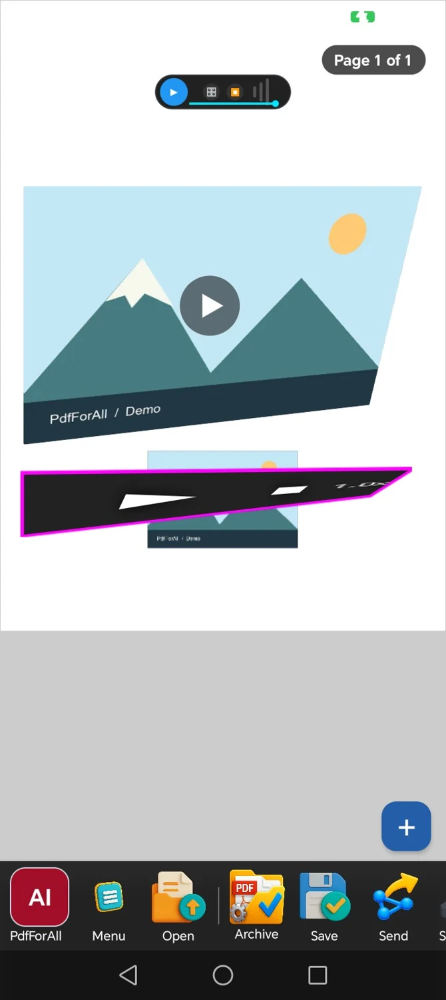
- Puoi aprire anche un PDF ricevuto da un’altra app: nel menu Apri con scegli PdfForAll.
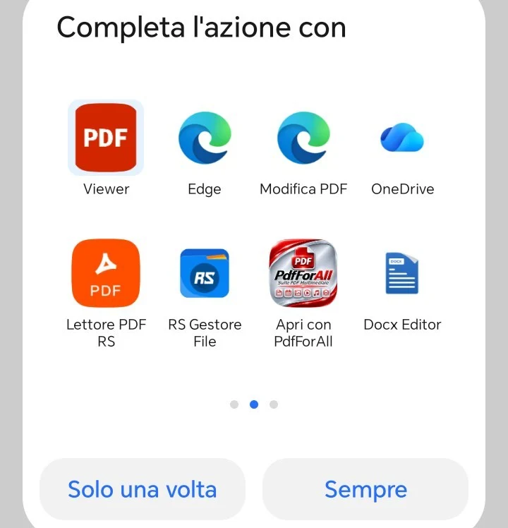
- Per recuperare un backup creato dall’app, seleziona lo ZIP con Apri e segui il flusso di importazione.
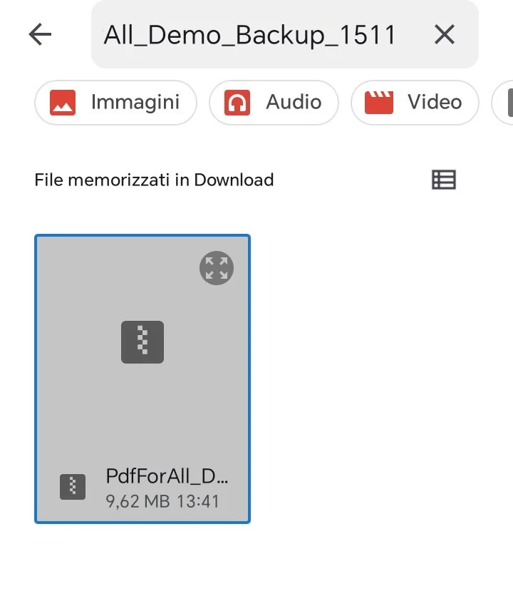
- Il selettore e il menu Apri con sono di Android: aspetto e servizi disponibili possono cambiare tra telefoni.
- Il documento selezionato viene caricato nell’editor.
Documenti Word, Excel e TXT
- Usa Apri oppure Apri con PdfForAll dal gestore Android per caricare DOCX, XLSX o TXT.
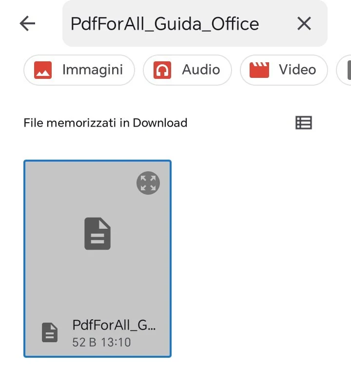
- Il contenuto viene convertito in PDF per la lettura e le modifiche; il documento Office originale non viene riscritto.
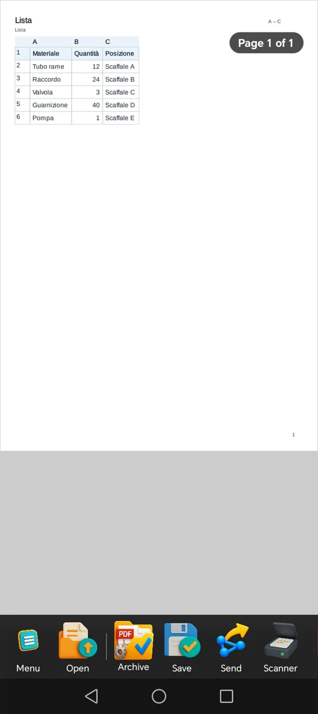
- Nei fogli Excel complessi controlla celle, formule e impaginazione dopo la conversione. I formati non supportati possono richiedere un’app esterna.
ZIP, RAR e pacchetti PdfForAll
- Apri ZIP o RAR con il pulsante Apri. Per gli archivi generici scegli una directory Android oppure l’Archivio dell’app.
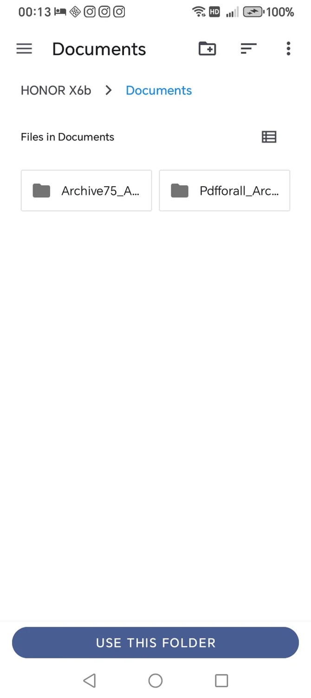
- I pacchetti condivisi da PdfForAll vengono importati automaticamente; la cartella ricevuta è evidenziata in blu. Apri il documento dalla cartella importata.
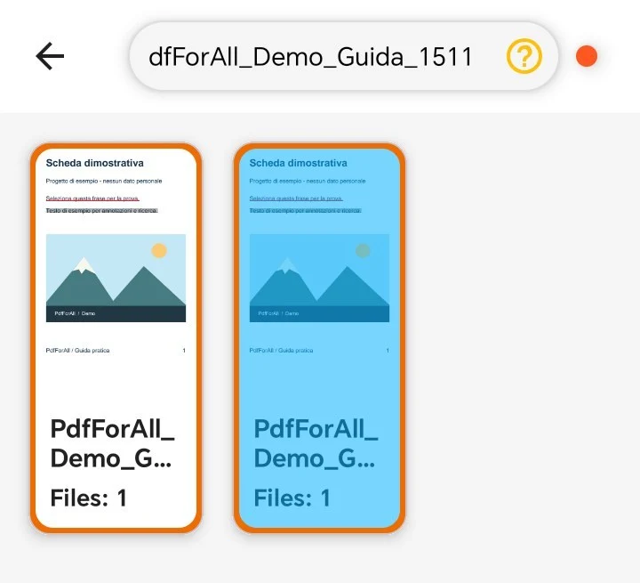
- I contenuti multimediali del progetto restano collegati. Per i file non riconosciuti usa un’app esterna. Prima dell’invio puoi scegliere il nome del pacchetto.
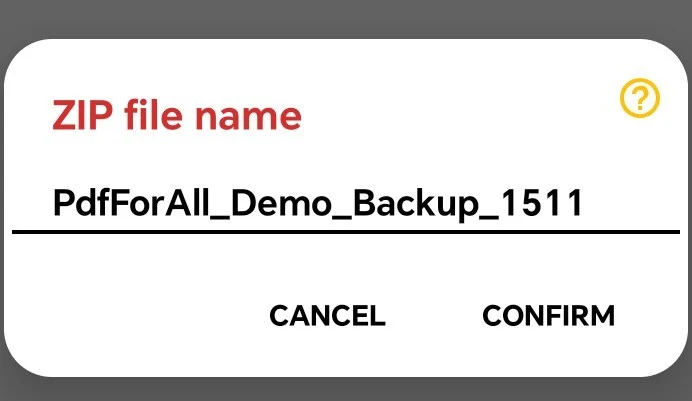
Archivio
Ritrova documenti, bozze, cartelle e backup.
Archivio, cartelle e backup
- L’archivio dell’app raccoglie i documenti organizzati in cartelle. Da qui puoi riaprire i tuoi lavori e usare le operazioni disponibili sui file.

- Tocca Archivio per entrare nella gestione dei documenti.
- Apri la cartella desiderata oppure crea una nuova cartella con il comando disponibile nella schermata.
- Tocca il documento da riaprire; usa i comandi di selezione e il menu del file per le altre operazioni.
- Per trasferire più lavori insieme usa il backup ZIP previsto dall’archivio, quindi importalo sull’altro dispositivo con Apri.
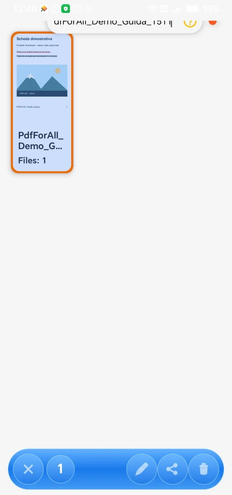
- Un backup è una copia separata del lavoro. Conservane una anche fuori dall’app, soprattutto prima di aggiornamenti o prove impegnative.
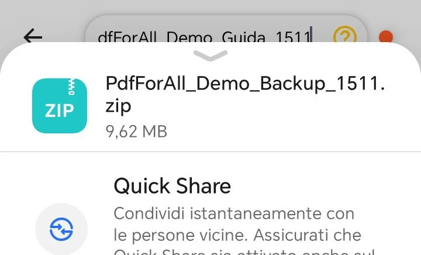
- Documenti organizzati e una copia utilizzabile per il trasferimento.
Gestione PDF
Crea un PDF, unisci documenti e aggiungi, elimina o riordina le pagine.
Creare un nuovo documento
- Il menu Nuovo raccoglie la creazione del documento e gli strumenti per gestire le pagine.

- Tocca Nuovo nella toolbar e scegli Nuovo Documento Vuoto.
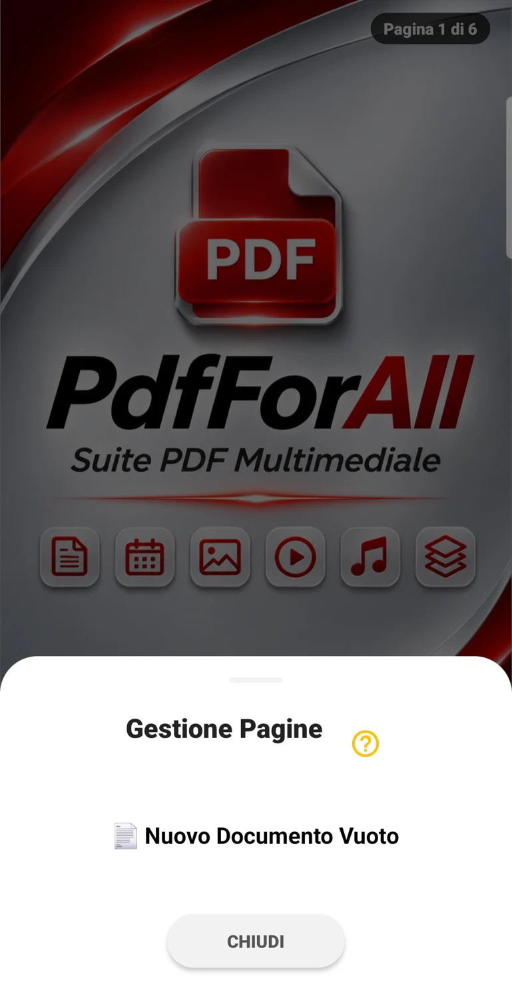
- Nel dialogo scegli il tipo di foglio e il numero di pagine disponibili.
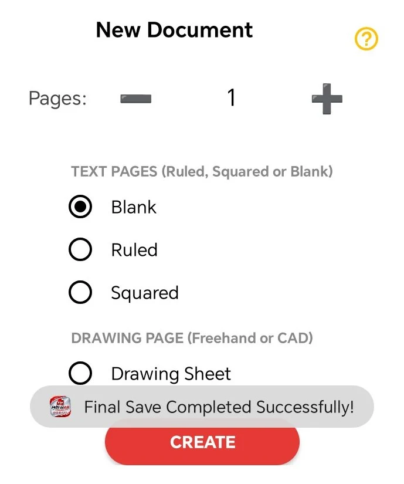
- Conferma la creazione: il documento vuoto diventa il nuovo foglio di lavoro.
- Inserisci testo, immagini o altri contenuti, quindi salva una bozza per continuare in seguito.
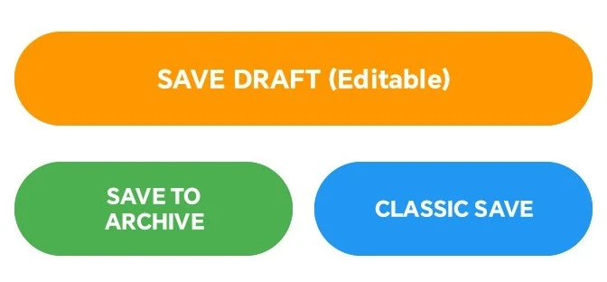
- La destinazione del registratore e dello sbobinamento usa il foglio bianco di testo; questo percorso è distinto dal dialogo generale di creazione.
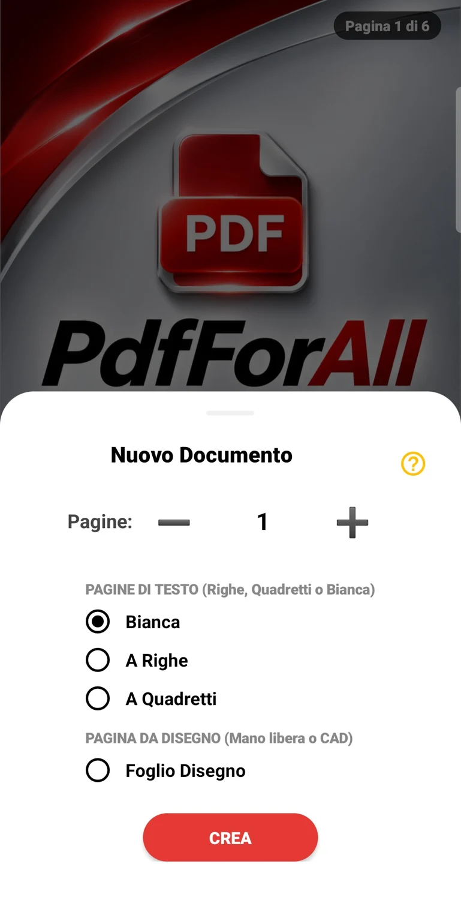
- Un nuovo documento da personalizzare.
Aggiungere, unire e riordinare
- Lavora sulla struttura del documento senza ricrearlo da zero. Le opzioni di modifica sono disponibili quando il file è modificabile.
- Aggiungi Pagina permette di scegliere le pagine da inserire e la posizione proposta dal dialogo.
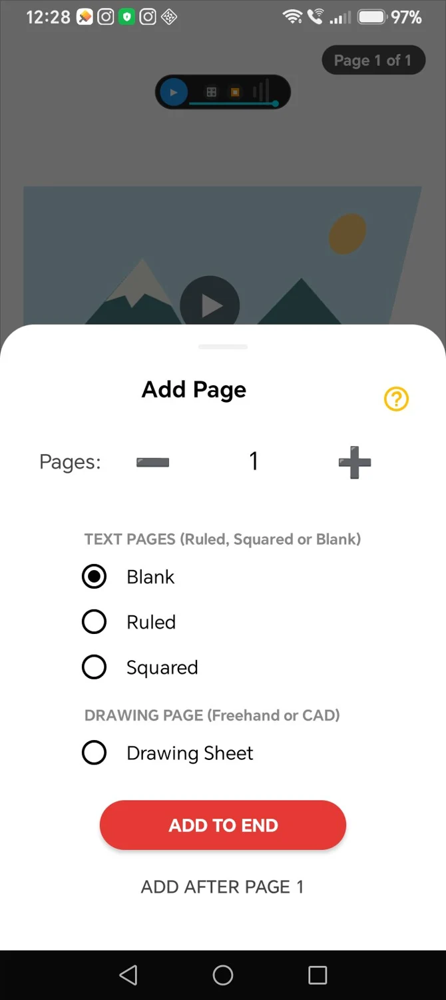
- Assembla PDF (Unisci File) aggiunge un altro documento scegliendolo dall’archivio dell’app o dal gestore Android.
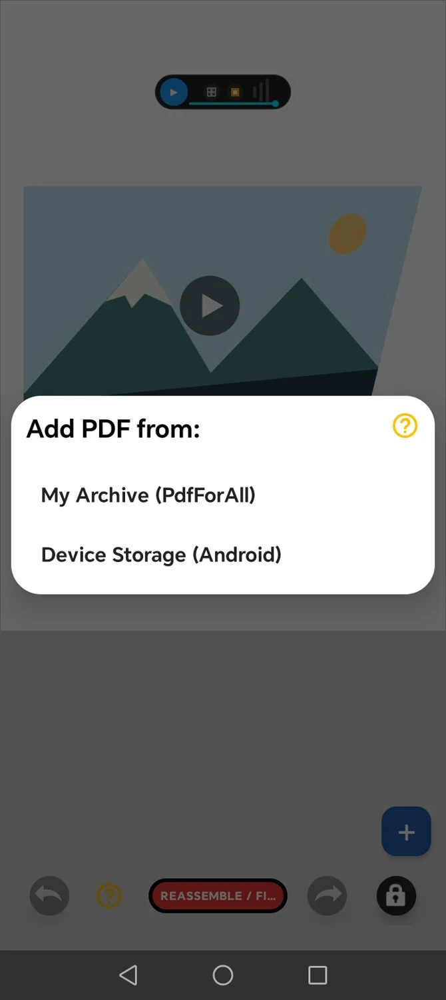
- Riordina Pagine apre le miniature: cambia l’ordine e conferma prima di tornare al documento.
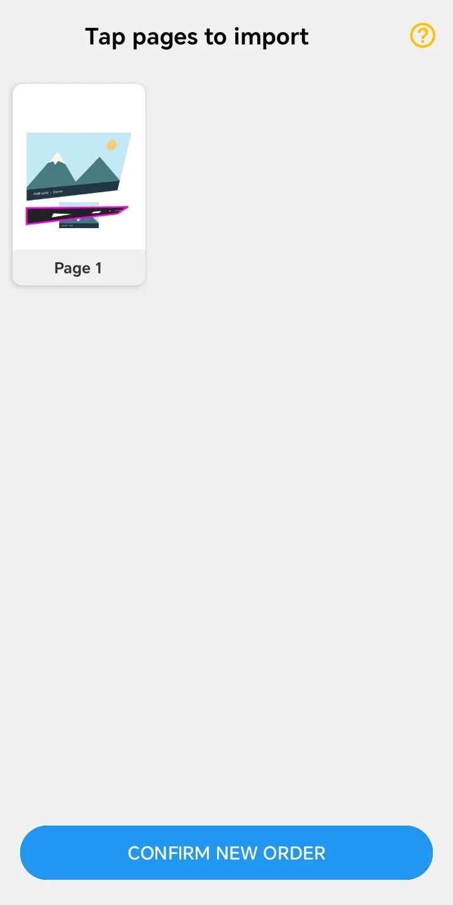
- Elimina Pagina rimuove le pagine selezionate nel dialogo. Controlla il risultato e salva la nuova versione.
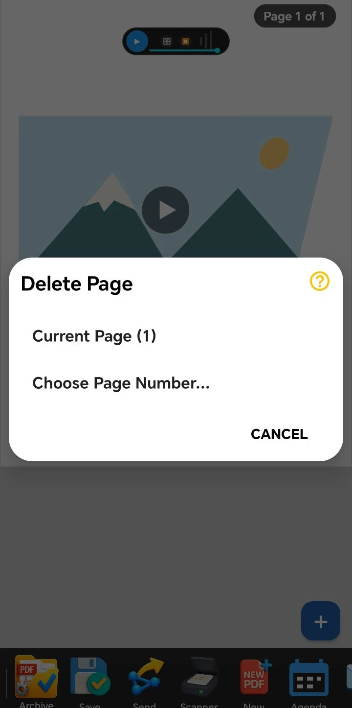
- Prima di riorganizzare un documento importante conserva una bozza. Dopo il riordino verifica anche le annotazioni e i player.
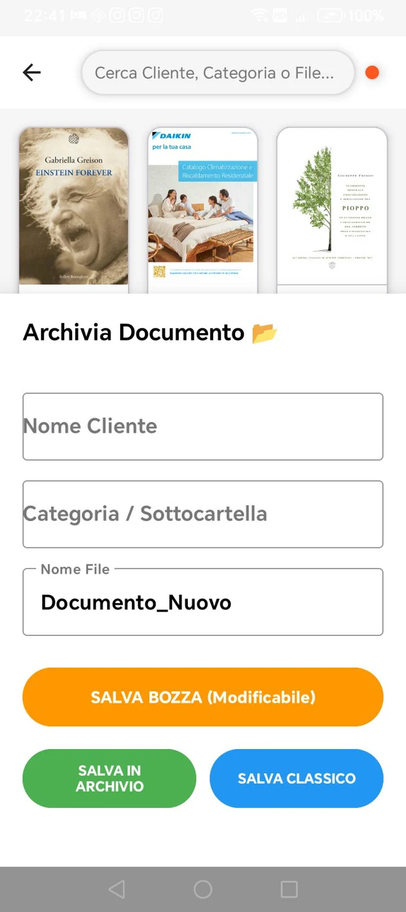
- Un fascicolo con le pagine nell’ordine desiderato.
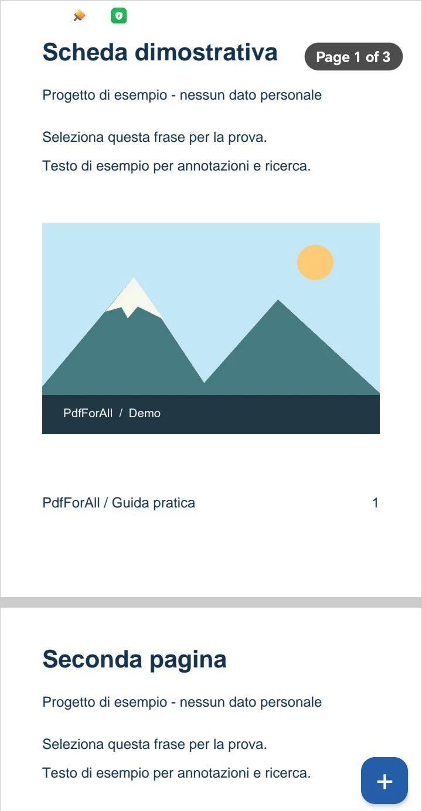
Salva
Conserva una bozza modificabile o esporta un PDF definitivo.
Salvare: bozza o PDF definitivo
- La bozza conserva il progetto modificabile. Il PDF definitivo stabilizza i contenuti impaginati per la consultazione e la condivisione.
- Tocca Salva al termine delle modifiche e attendi la preparazione del documento.
- Nella schermata Archivia Documento compila Nome Cliente, Categoria / Sottocartella e nome del documento.
- Usa SALVA BOZZA (Modificabile) per continuare a spostare o modificare testo, foto e player inseriti.
- SALVA IN ARCHIVIO conserva il definitivo nell’archivio. SALVA CLASSICO apre Android per scegliere una destinazione esterna. Riapri il file e controllalo.
- Nel definitivo, foto e player finalizzati non si spostano e non si ridimensionano con il doppio tap. Audio e video si consultano in PdfForAll; un lettore PDF esterno può mostrare solo l’aspetto statico.
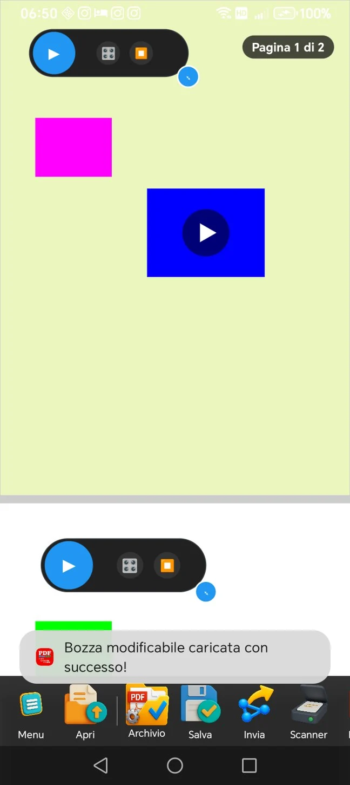
- Una bozza per lavorare ancora oppure un PDF definitivo da consultare.
Invia
Condividi il PDF mediante le app disponibili sul dispositivo.
Condividere e trasferire
- Condividi il documento singolo oppure usa un backup per trasferire più lavori. La scelta del formato determina come si riapre il contenuto.
- Completa le modifiche e salva una bozza o il PDF definitivo secondo l’uso previsto.
- Tocca Invia per preparare la condivisione del documento definitivo e scegli l’app e il destinatario nel menu Android.
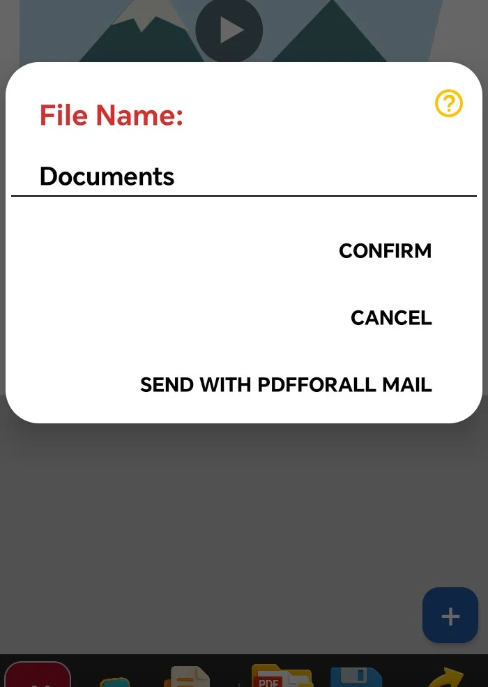
- Per continuare a lavorare su un altro dispositivo trasferisci la bozza o il backup dell’archivio.
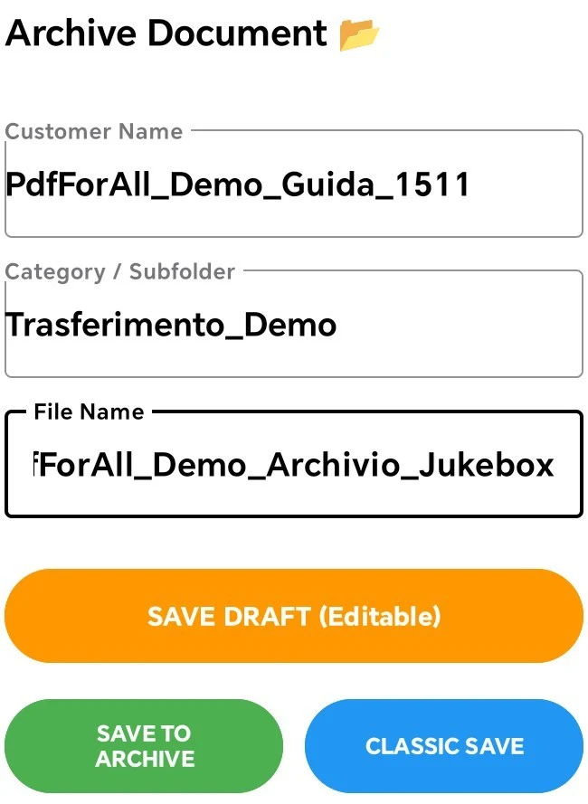
- Sul telefono ricevente apri il file con PdfForAll e controlla pagine, foto, note, audio e video prima di eliminare altre copie.
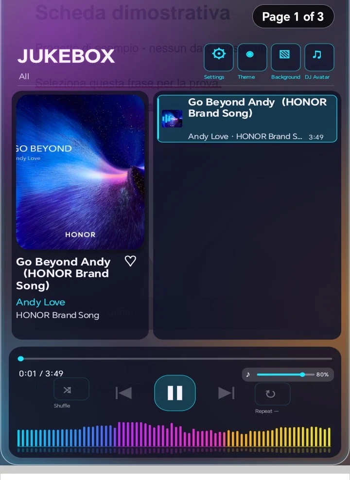
- Per player e note multimediali il destinatario deve usare PdfForAll. La radio è un ascolto nell’app e non si trasferisce dentro il PDF.
- Un documento o backup consegnato e controllabile sull’altro dispositivo.
Scanner
Fotografa fogli e riuniscili in un PDF.
Scanner e documento da immagini
- Lo scanner di documenti apre l’interfaccia di acquisizione disponibile sul telefono, con fotocamera e importazione dalla galleria.
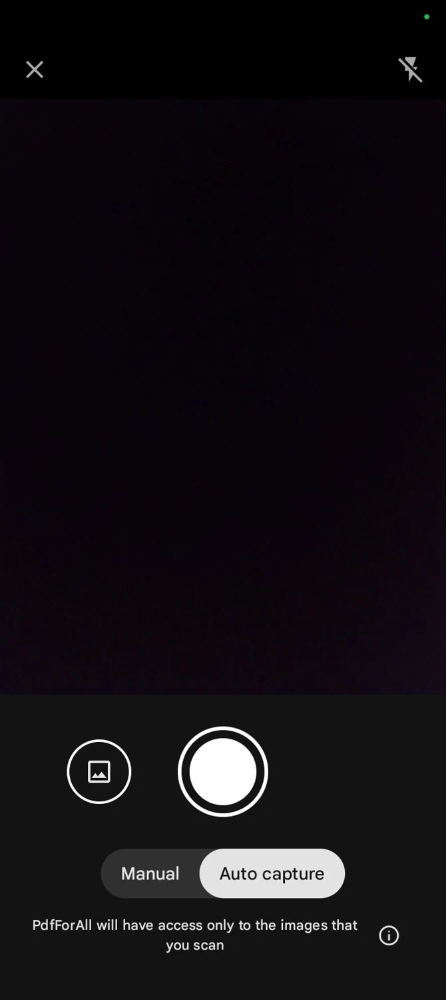
- Tocca Scanner e segui l’interfaccia di scansione per acquisire una o più pagine.
- Regola ritaglio, orientamento e i filtri disponibili; conferma il risultato.
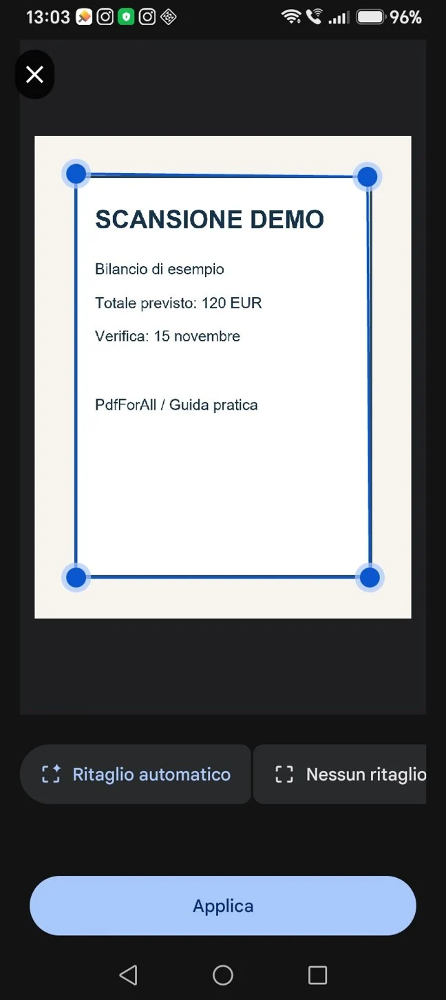
- Al ritorno nell’app scegli tra le destinazioni proposte: aggiungere al documento, aprire una nuova scansione, impaginare il testo riconosciuto o condividere.
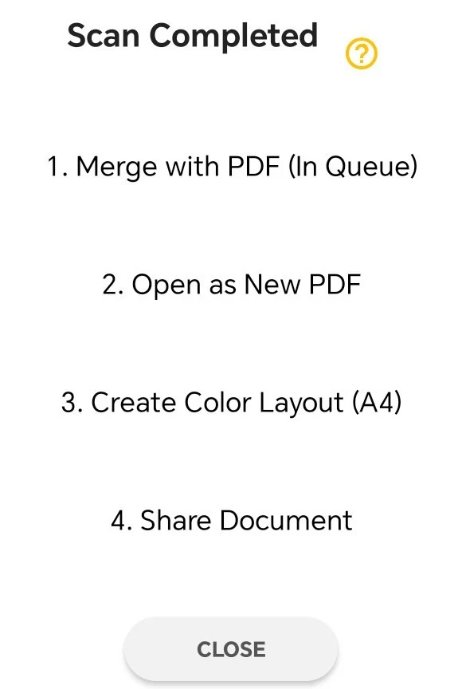
- Controlla la leggibilità delle pagine e il testo dell’OCR prima del salvataggio.
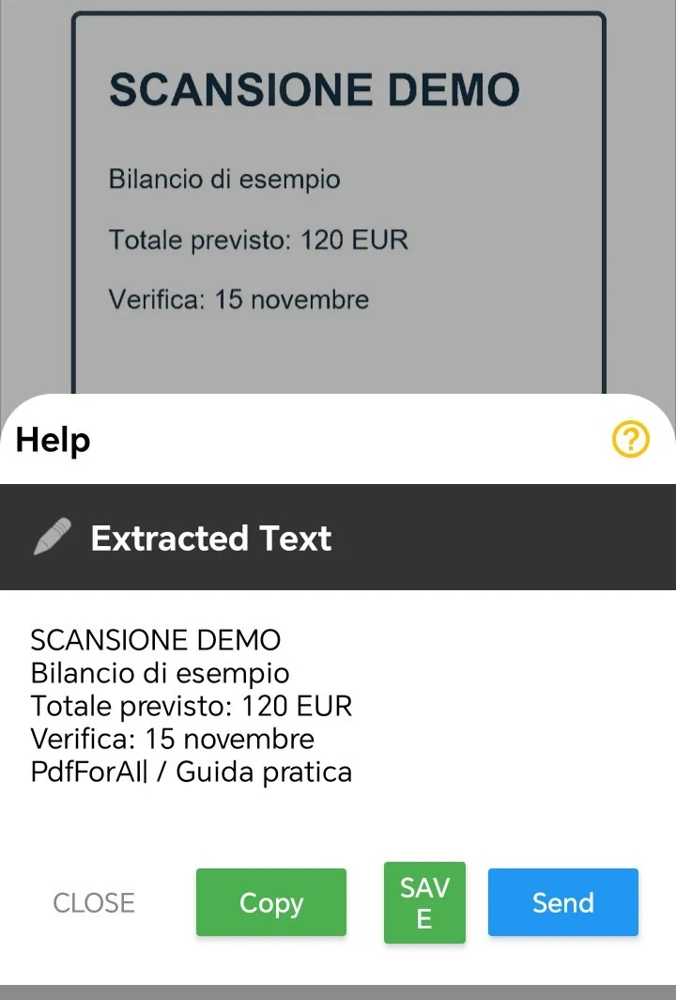
- Per la scansione fotografa il documento con luce uniforme e bordi visibili. I controlli dello scanner possono cambiare con i servizi Google installati.
- Una scansione PDF da aprire, unire o condividere.
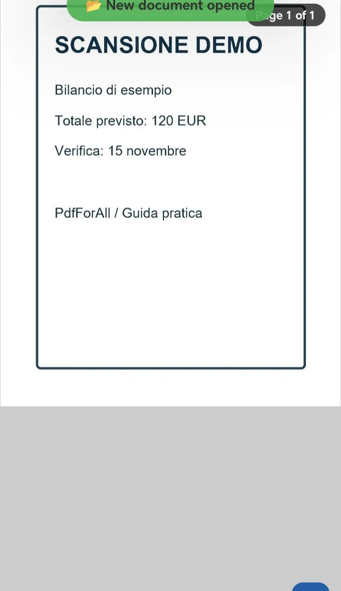
PDF Editor
Sostituisci o estrai testo e modifica le foto già presenti nel PDF.
Sostituisci testo
- Scrivi > Sostituisci modifica testo già presente nel PDF. Tieni premuto e trascina sul testo per delimitare la parte da sostituire. L’app analizza le parole della zona e apre il contenuto riconosciuto nell’editor. Controlla sempre il risultato del riconoscimento.

- Il testo sostitutivo usa la toolbar inferiore di Document Studio. Puoi correggere il contenuto con la tastiera e scegliere font, dimensione, stile, colore, allineamento e spaziatura. La copertura del testo originale resta associata alla zona selezionata.
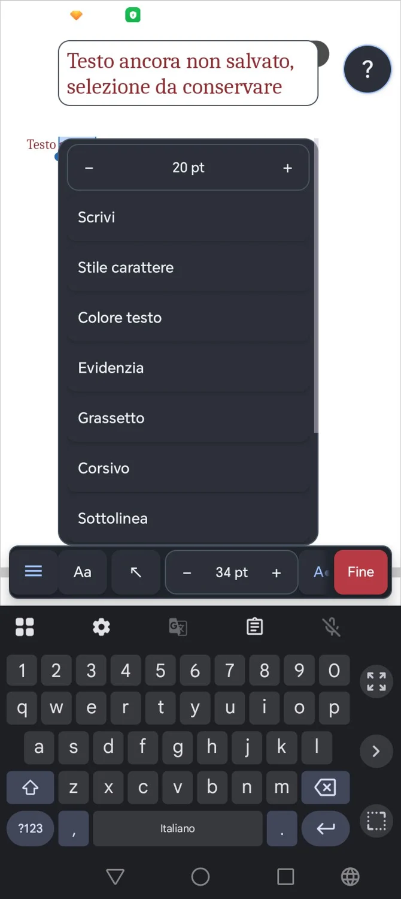
- Per cambiare una singola parola dentro il riquadro, tienila premuta per 500 ms. Le maniglie blu delimitano i caratteri: trascinale per cambiare l’estensione. Puoi sostituire la parola digitando, oppure cambiare solo font e colore della parte selezionata.

- Il doppio tap sulla parola o frase attiva Trasforma testo per il blocco. Un tap sul testo salvato riapre la scrittura. Usa Fine per terminare e Salva per conservare il documento. Riapri la copia e controlla impaginazione e copertura del testo precedente.
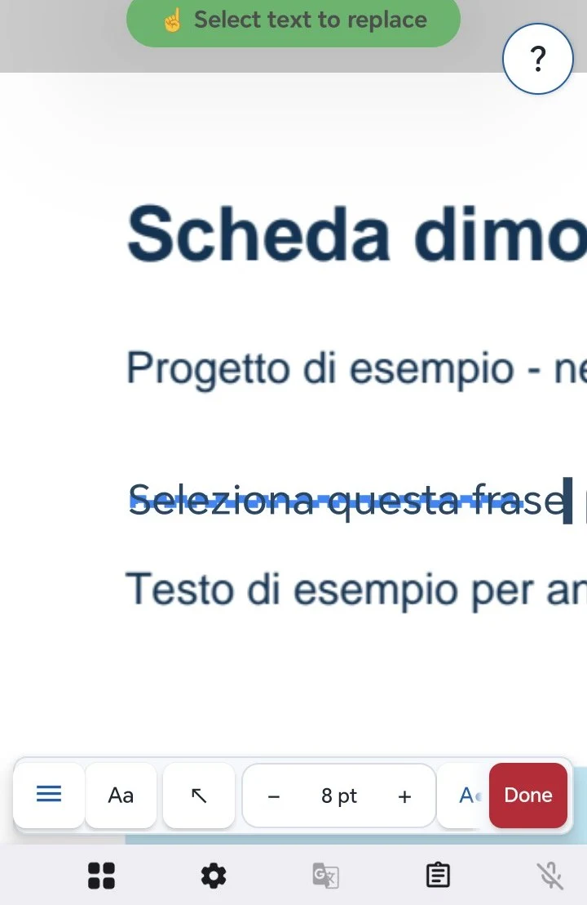
Estrarre testo e usare l’OCR
- Estrai porta il testo selezionato in una finestra dove puoi rileggerlo, correggerlo, copiarlo o condividerlo.
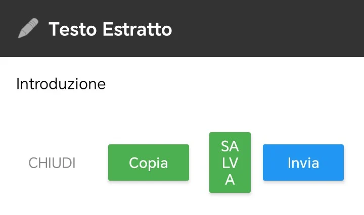
- Scegli Estrai dal menu Modifica Testo.
- Tieni premuto sulla prima parola, poi trascina per estendere la selezione. Al rilascio si apre Testo Estratto. Su una pagina acquisita come immagine l’app usa il riconoscimento del testo quando disponibile.
- Nella finestra del risultato controlla e correggi eventuali errori, soprattutto nomi e numeri.
- Usa Copia per gli appunti, Invia per condividere il testo oppure Salva per inserirlo attraverso il flusso proposto.
- L’OCR dipende dalla nitidezza dell’immagine. Una scansione ben illuminata e diritta migliora il risultato.
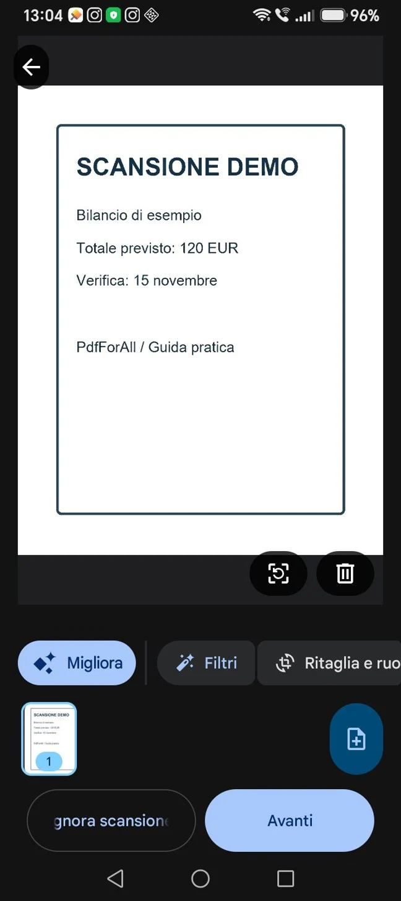
- Testo riutilizzabile a partire dal contenuto della pagina.
Modificare le foto già presenti
- Apri PDF Editor e scegli Modifica foto. Tocca due volte l’immagine da sistemare.
- Sposta la fotografia o usa le maniglie per ridimensionarla. Tocca fuori dalla selezione per passare a un’altra foto con un doppio tocco.
- Tocca Applica dopo aver sistemato tutte le fotografie. Salva il documento dall’apposito pulsante.
Annotazioni
Scrivi, firma, compila moduli e aggiungi note nascoste o vocali.
Scrivi / Document Studio
- Scrivi > Scrivi apre Document Studio. Tocca il punto del foglio e digita con la tastiera Android. Il Foglio di scrittura usa gli stessi strumenti di testo. La toolbar inferiore moderna segue il tema chiaro o scuro e resta sopra tastiera e barra di navigazione.
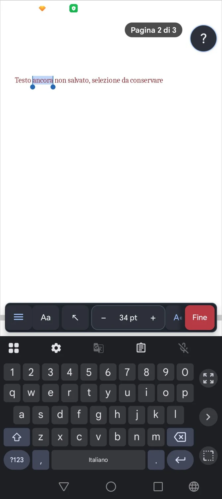
- Le categorie aprono menu verticali. Scorri orizzontalmente la riga dei comandi se alcuni non sono visibili. Il tocco breve esegue il comando; la pressione prolungata sui comandi che la prevedono mostra il relativo aiuto. Il pulsante ? apre questa scheda senza uscire dal documento.
- La galleria distingue font artistici e professionali. I caratteri artistici installati sono disponibili con anteprima. Le alternative da ufficio usano i font reali Carlito, Caladea e Cousine: i nomi di compatibilità sono dichiarati come alternative, non come installazione dei font proprietari.
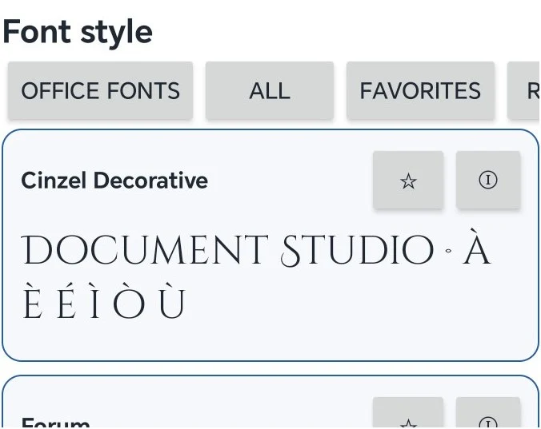
- Tieni premuto per 500 ms su una parola per selezionarla. Trascina le maniglie blu per estendere o ridurre la selezione. I comandi di font e colore si applicano alla parte selezionata. Il menu contestuale offre copia, taglia, incolla e seleziona tutto.
- Usa i comandi di dimensione, grassetto, corsivo, sottolineatura, allineamento, interlinea e spaziatura. La tavolozza propone colori rapidi e un selettore personalizzato. Senza una selezione di caratteri la formattazione riguarda il testo attivo secondo il comando scelto.
- Un tap sul blocco di testo salvato riapre la scrittura nel punto toccato. Durante la modifica un tap sposta il cursore. Il doppio tap direttamente sulla parola o frase attiva Trasforma testo per quel blocco e conferma una sola volta il testo in scrittura.
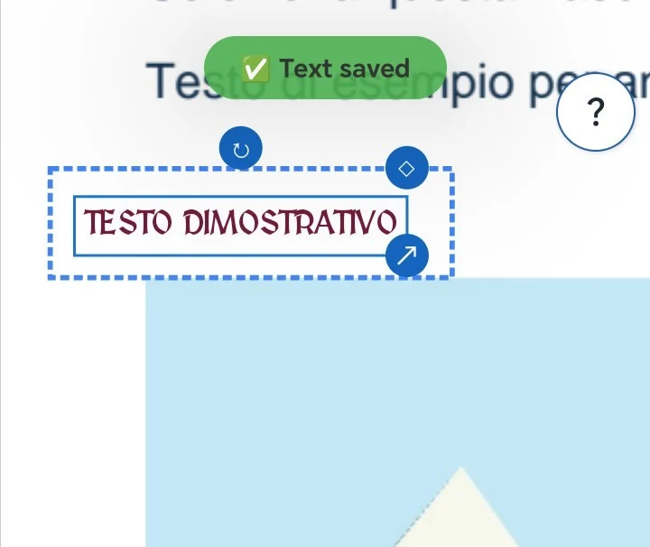
- In Trasforma testo trascina il corpo per spostarlo. Usa le maniglie per ruotare, ridimensionare e inclinare il blocco. Il contorno segue il testo durante lo spostamento. Tocca fuori per lasciare la selezione, oppure usa Fine per terminare lo strumento.
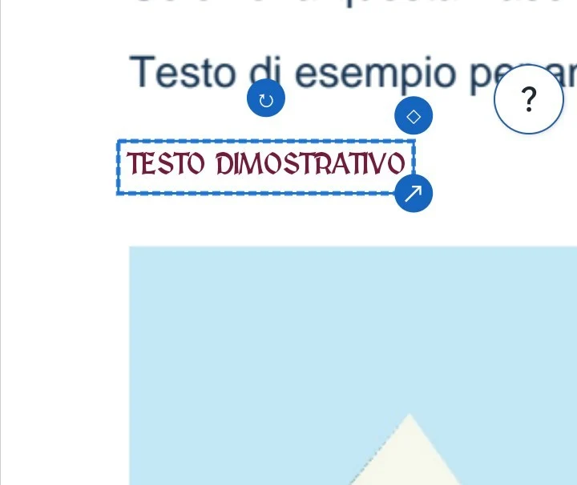
- Il pulsante rosso Fine è integrato nella toolbar. Chiude lo strumento e conferma il testo; salva poi il documento dal comando Salva. Conserva una bozza se vuoi continuare a modificare i contenuti. Le pagine definitive dei Diari seguono le proprie regole di immutabilità.
Inserire una firma autografa
- La funzione Firma apre una lavagna su cui disegnare la firma da impaginare come elemento grafico.
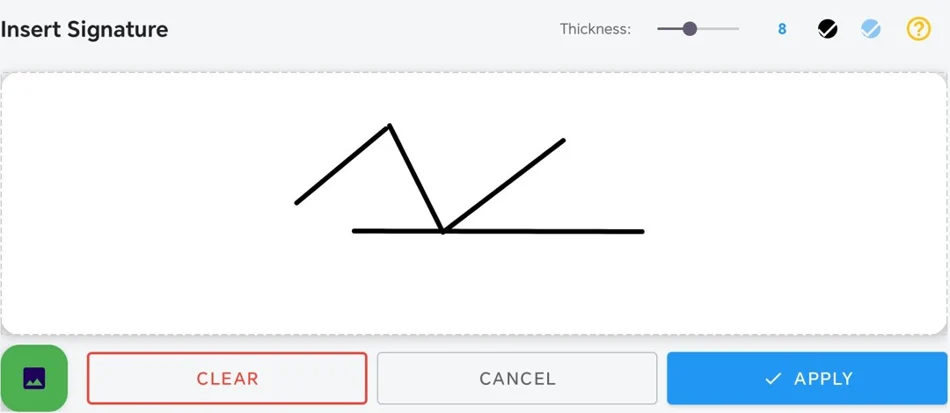
- Apri Modifica Testo e tocca Firma.
- Disegna sulla lavagna scegliendo spessore e inchiostro nero o blu. Pulisci cancella il tratto; Annulla torna al documento.
- Conferma la firma e posizionala nel documento.
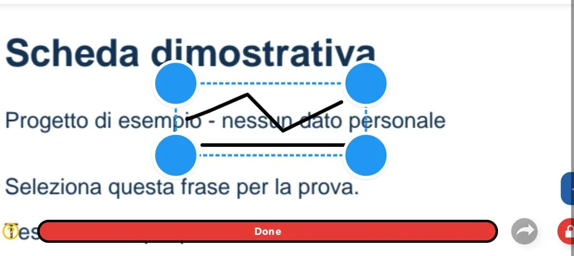
- Regola dimensione e posizione prima di confermare l’impaginazione; conserva una bozza se devi ritoccarla.
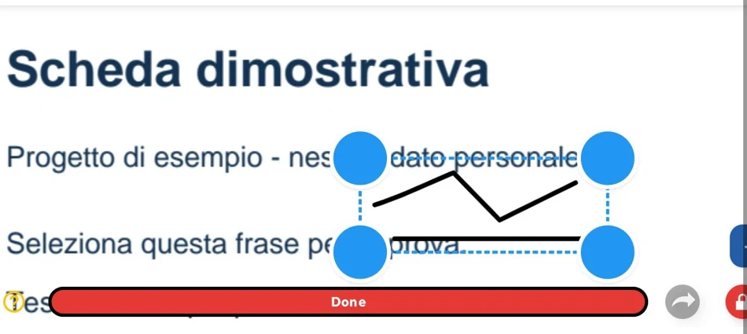
- Puoi anche importare una firma dalla galleria, dallo scanner o dalle recenti quando presenti. Questa firma autografa grafica non equivale a una firma digitale con certificato.
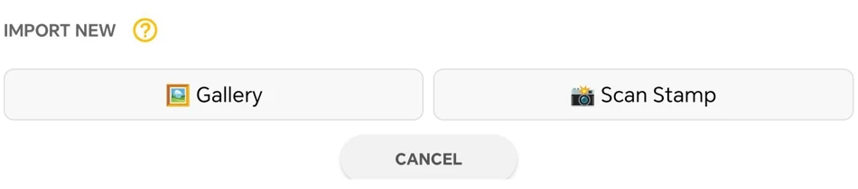
- La firma disegnata viene collocata sulla pagina.
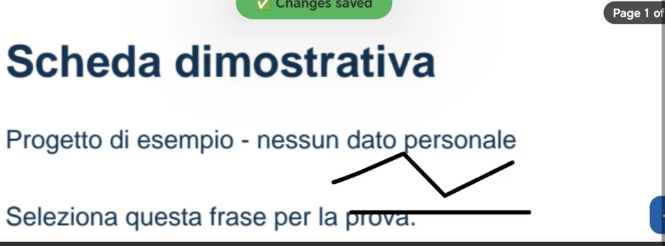
Compila Modulo
- Apri il modulo e scegli Compila Modulo dal menu Scrivi. Controlla sempre etichette e campi riconosciuti.
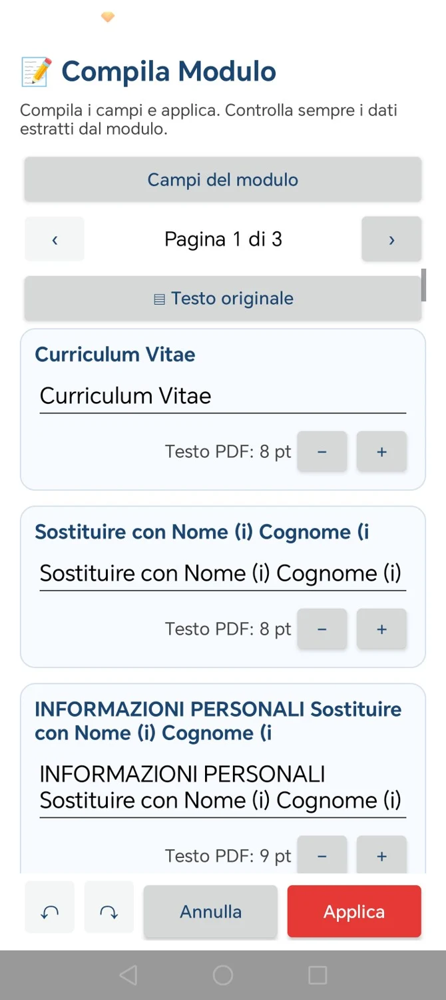
- Inserisci le risposte e usa le frecce per cambiare pagina. I campi su più righe vanno a capo; controlla l’adattamento del testo e regola la dimensione con + e − se necessario.
- Premi Applica, controlla il risultato sul documento e poi Salva. Moduli scannerizzati o non supportati possono richiedere OCR o inserimento manuale con Scrivi.
Nota nascosta
- Scrivi > Nota Nascosta associa un contenuto riservato alla zona selezionata del documento. Seleziona l’area con il gesto previsto e inserisci il testo nel dialogo della nota. Il contenuto non viene impaginato come una normale scritta visibile nel PDF.
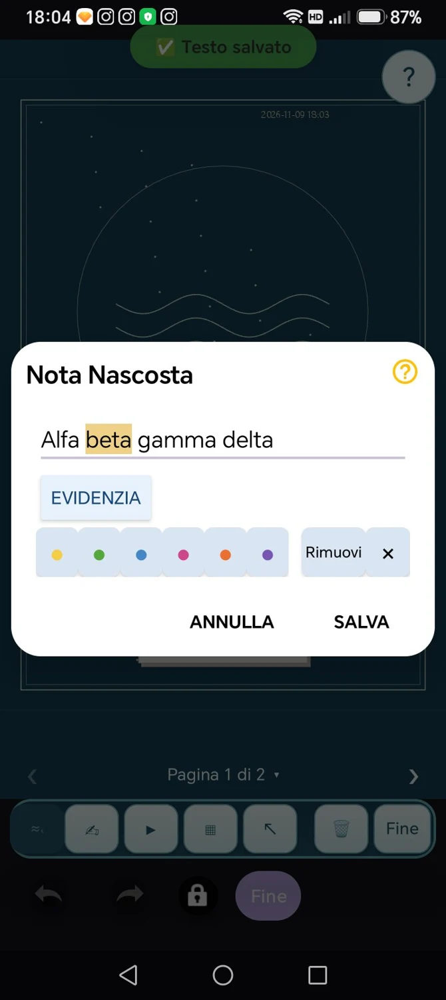
- La toolbar inferiore condivide lo stile del Foglio di scrittura. Il comando Scrivi della toolbar mantiene la modalità Nota nascosta. Usa Fine per terminarla e Salva per conservare la nota nel progetto.
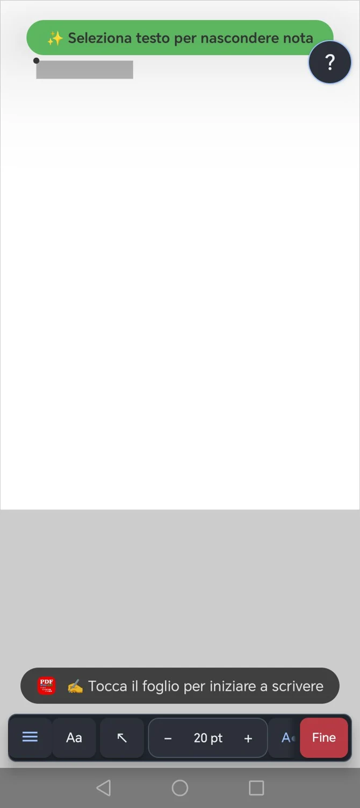
- Il testo visibile modificabile del documento conserva i gesti comuni: tap per scrivere, doppio tap sulla parola o frase per trasformare il relativo blocco, pressione di 500 ms per selezionare una parola durante la scrittura. Questi gesti non rendono visibile il contenuto riservato della nota.
- Riapri il documento con PdfForAll e tocca il marcatore della nota per leggerne il contenuto. Verifica la nota nella copia salvata prima di condividerla.
Nota vocale collegata al testo
- La nota vocale è un commento audio collegato a una selezione. È diversa dal registratore vocale con player impaginato.
- Scegli Nota Vocale e seleziona le parole da commentare, anche su più righe.
- Avvia la registrazione nella finestra dedicata, poi termina e conferma il commento.
- Sul foglio rimangono l’evidenziatura della selezione e un’icona altoparlante collegata alla nota.
- Tocca l’icona per riascoltare. Per eliminarla usa i comandi disponibili sulla nota o lo strumento Cancella.
- Una selezione su più righe produce una sola nota audio. Se annulli la registrazione puoi effettuare una nuova selezione.
- Un’unica nota vocale associata al passaggio evidenziato.
Evidenzia
Metti in risalto il testo scegliendo modalità, colore e opacità.
Evidenziare con tre modalità
- Scegli la modalità adatta al contenuto: testo riconosciuto, segno libero oppure area rettangolare.
- Apri Evidenzia e scegli colore, opacità e, quando rilevante, spessore.
- Selezione Magica (Testo/OCR): attiva lo strumento, tieni premuto su una parola finché compare la lente e trascina per estendere la selezione.
- Pennarello (Mano Libera): passa il dito sull’area da marcare. Rettangolo (Manuale): trascina per definire l’area.
- Tocca il pulsante di conferma sul foglio per terminare e poi salva il documento.
- Un’opacità moderata mantiene leggibile il testo. Il rettangolo è utile anche per tabelle e zone senza testo riconosciuto.
- Un’evidenziatura adatta alla porzione del documento.
Sottolinea
Sottolinea il testo con un tratto continuo o tratteggiato, oppure barralo.
Sottolineare e barrare
- Il menu Linea applica marcature al testo: sottolineatura continua, tratteggiata oppure barratura.
- Apri Linea e scegli il colore e lo spessore.
- Seleziona Sottolinea, Tratteggiato oppure Barrato e tocca Attiva.
- Seleziona sul documento il testo da marcare.
- Conferma lo strumento; usa la freccia Annulla se devi rimuovere l’ultima operazione.
- Per disegnare una linea geometrica libera usa Disegno > Linea retta: è un’operazione diversa dalla marcatura del testo.
- Una marcatura che mantiene il testo visibile.
Disegna
Disegna a mano libera o aggiungi linee, frecce e forme.
Disegno e forme geometriche
- Il disegno libero e le forme aiutano a costruire schemi, frecce visive, cornici e annotazioni.

- Apri Disegna e scegli colore e spessore del tratto.
- Penna: scegli la stabilizzazione del tratto. Linee: scegli Linea dritta, Freccia, Polilinea o Poligono e, se utile, aggancia gli angoli a 45°. Forme: scegli la figura da disegnare, per esempio rettangolo, ovale, triangolo o stella. Controlla l’anteprima e tocca Attiva.
- Tocca per aggiungere i vertici. Doppio tap sull’ultimo per terminare, oppure tocca il primo per chiudere. Fine conferma il disegno.
- Trascina sul foglio per disegnare. Per lavorare con precisione puoi bloccare lo scorrimento con il lucchetto.
- Quando una forma è selezionata usa il secchiello e i controlli disponibili per bordo e riempimento. Conferma al termine.
- Prima di riprendere la navigazione sblocca il lucchetto. Annulla permette di tornare indietro sull’ultima operazione della sessione.
- Tratti e forme collocati nel documento.
Foto
Inserisci una foto e regolane dimensioni, forma e posizione nella pagina.
Dolomites Panorama · F Delventhal. Fonte · CC BY 2.0Foto: inserire e impaginare
- Puoi inserire una foto dalla galleria o acquisirla con la fotocamera, poi adattarla alla composizione della pagina.
- Apri Foto e scegli Foto da Galleria oppure Foto con Fotocamera.
- Seleziona o scatta la foto e torna al documento.
- Posiziona l’immagine, regola dimensioni e orientamento con le maniglie disponibili.
- Usa la barra dedicata per i parametri dell’immagine e conferma. In una bozza il doppio tap consente di riprendere l’editing.
- Nel PDF definitivo la foto viene stabilizzata. Conserva la bozza se devi cambiarne posizione o dimensioni in seguito.
- Una fotografia inserita nel layout della pagina.
Cornici decorative
- Su una pagina Disegno tocca l’icona delle cornici accanto al secchiello.
- Scorri le anteprime e scegli uno stile; Nessuna cornice rimuove quella applicata alla pagina corrente.
- Lo sfondo centrale mantiene il colore scelto. Salva come bozza per continuare il lavoro oppure come PDF definitivo.
Album fotografici
- L’album organizza più fotografie su pagine PDF, senza doverle impaginare singolarmente.
- Apri Foto e scegli Crea Album Fotografico.
- Tocca il layout desiderato: una, due, quattro oppure otto foto per pagina. Si apre il selettore delle immagini.
- Seleziona le immagini nel selettore del telefono e conferma la scelta.
- Scegli la destinazione proposta: nuovo documento oppure aggiunta al documento corrente. Scatta e Impagina (Album) avvia invece la raccolta dalla fotocamera.
- Controlla l’ordine e i ritagli delle foto nel risultato prima di salvare o condividere l’album.
- Un album PDF composto secondo il layout scelto.
Video
Posiziona un video nel PDF e personalizza forma, cornice e controlli.
Estratto di Timelapse of Swiss mountains · jendall. Fonte · CC BY 3.0Video nel documento
- Un video può essere scelto dal telefono oppure registrato e impaginato sul foglio.
- Apri Video e scegli dove inserirlo: nella pagina corrente, in una pagina aggiunta al PDF aperto oppure in un nuovo documento video. In un Diario, tocca invece il contenitore video previsto dal modello.
- Apri Video e scegli Crea Album Video per selezionare un filmato esistente, oppure Registra e Impagina.
- Seleziona o registra il video e attendi il ritorno al documento.
- Regola posizione, dimensioni e orientamento del riquadro e della barra di controllo quando presente.
- Conferma l’impaginazione. Tocca il video o usa i suoi controlli per riprodurlo in PdfForAll.
- Nel PDF definitivo il video resta riproducibile in PdfForAll ma il riquadro finalizzato non si sposta o ridimensiona. Altri lettori PDF possono mostrare soltanto la copertina.
- Un filmato consultabile dalla pagina.
Simboli
Aggiungi simboli ed emoji e disponili nella pagina.
Emoji e composizioni creative
- Le emoji aggiungono segnali visivi a schede, diari, appunti e pagine multimediali.
- Apri Simboli nella toolbar.
- Scegli il simbolo dal selettore mostrato dall’app.
- Posiziona il simbolo sulla pagina e regola le maniglie disponibili.
- Combina emoji, titoli, immagini e colori del foglio, poi salva la composizione come bozza o PDF.
- Lascia spazio tra i simboli e il testo: pochi elementi ben collocati sono più leggibili di una pagina affollata.
- Una pagina con simboli grafici inseriti nel layout.
Agenda
Organizza appuntamenti, allegati e promemoria nel calendario multimediale.
Agenda multimediale
- Esempio dell’interfaccia in italiano
- Agenda apre il calendario multimediale dalla barra principale.
- Scorri in verticale per vedere le 24 ore e in orizzontale per cambiare giorno. Tocca un appuntamento per consultarlo, fai doppio tap per modificarlo e tieni premuto per le azioni rapide.
- Nella scheda puoi impostare data, orari, categoria, ricorrenza e promemoria. Salva conferma le modifiche.
- Nelle note seleziona una parola o una frase, apri «Evidenzia» e scegli uno dei colori. La palette resta aperta per cambiare colore o rimuovere l’evidenziazione dalla selezione. X chiude la palette.
- Tocca + per aggiungere allegati. Apri la ricerca per trovare appuntamenti per titolo, persona, categoria, data, ora o note.
- «Altro» apre il menu bianco. Scegli «Temi grafici» per cambiare subito l’aspetto conservando il giorno e lo scroll.
- «Collega archivio» permette di selezionare una cartella o un documento già nell’archivio connesso. Puoi aprire, sostituire o rimuovere il riferimento. Se la risorsa non è accessibile, ricollegala dalla scheda.
Mail
Apri gli strumenti per consultare le caselle compatibili e preparare messaggi con allegati.
Mail
Crea diario
Scegli un diario e costruisci le tue pagine con testi e contenuti multimediali.
Diario Multimediale
- Crea diario apre creazione e archivio dei Diari. I temi selezionabili sono Il mio diario, Diario di viaggio, Diario dei ricordi, Diario musicale, Mare · Orizzonti blu, Montagna · Vette e silenzi, Universo · Polvere di stelle e Bosco · Radici e sogni. Il vecchio tema Diario dei progetti resta leggibile nei Diari già salvati, ma non viene proposto per quelli nuovi.
- Assegna un titolo, scegli il tema e la modalità di apertura disponibile. Le composizioni includono foto con testo, video con testo, musica con testo, solo testo, media, galleria, disegno e pagine dedicate ai player. Scegli la composizione prima di riempire i suoi contenitori.
- I contenitori di testo, foto e media appartengono al layout della pagina. Le maschere fotografiche e i contenitori decorativi di testo offrono le personalizzazioni realmente disponibili: font, colori, bordi, rotazione e ridimensionamento. Il pulsante meno nasconde le righe e diventa più per ripristinarle.
- Usa le categorie della toolbar del Diario: scrittura, media, pagina e modifica. I menu verticali raccolgono i comandi. Un tap usa un contenuto, il doppio tap apre la modifica o trasformazione prevista, un tap esterno termina l’interazione. La pressione prolungata sui comandi supportati mostra le indicazioni relative.
- Nel testo scegli font artistici, dimensione, colore, stile e spaziatura. Il doppio tap su un blocco abilita le maniglie per spostamento, rotazione, inclinazione o dimensioni, secondo il contenitore. Usa i comandi di data e ora per personalizzare le informazioni della pagina.
- Aggiungi fotografie, video, disegni e note vocali tramite i contenitori e i comandi del Diario. Le foto possono usare le maschere disponibili. Disegno e registrazione mantengono i propri strumenti. Controlla sempre i permessi Android richiesti per camera o microfono.
- Il Diario Musicale iniziale mostra un grande vinile nero statico con braccio e comandi nel riquadro inferiore. Il giradischi è il player stesso. Aggiungi i tuoi MP3 quando vuoi; non ci sono brani iniziali. L’anello luminoso e l’equalizzatore usano le frequenze reali quando l’analizzatore Android e disponibile.
- Nei contenitori musicali vuoti tocca + per scegliere Giradischi in vinile, Jukebox anni ’50, Stereo anni ’80 o VINYL SPECTRUM 360°. Le playlist restano indipendenti. Play, Pausa, Stop, precedente, successivo, avanzamento, volume e aggiunta dei brani usano i controlli del modello.
- I contenitori video propongono «Video classico — Senza cornice TV» e i modelli RetroVision 50, ColorVision 70, Classic CRT 90 e CrystalVision LCD. Il video classico resta ridimensionabile e spostabile. Nei televisori vintage il filmato resta confinato all’area dello schermo.
- Per una TV scegli come visualizzare il filmato: «Riempi lo schermo TV» adatta tutta l’area anche deformando; «Formato originale» mantiene le proporzioni con eventuali margini. Puoi cambiare questa impostazione durante la composizione; viene salvata senza modificare il file originale.
- Durante la composizione usa «Cambia modello» nel menu contestuale del player musicale o video. I riferimenti ai brani o al filmato e le impostazioni compatibili restano conservati. Eliminando il player rimane il contenitore vuoto: toccalo per inserire nuovamente un modello.
- Salva con un nome personalizzato nell’archivio indipendente dei Diari. Il salvataggio definitivo rende immutabili le pagine già concluse. Puoi riaprire il Diario e aggiungere nuove pagine con i comandi previsti; questo non sblocca quelle definitive. Verifica sempre il salvataggio riaprendo il Diario.
Audio
Apri le funzioni per MP3, registrazioni vocali, lettori nella pagina e radio.
MP3 / Audio Studio Pro
- Apri Audio > Lettore MP3. Aggiungi più file audio con il selettore Android e organizza la playlist nei controlli disponibili. I brani devono restare accessibili fino a quando vengono copiati nel progetto o esportati.
- Il lettore offre Play, Pausa, Stop, precedente, successivo, volume e avanzamento. I comandi disponibili dipendono dal modello e dal contesto. Controlla il brano selezionato e il suo ordine prima di impaginare.
- Con Salva e impagina scegli la destinazione proposta e poi lo stile nella schermata «Scegli lo stile audio», prima della creazione della pagina. Le anteprime compatte hanno lo stesso formato di Vinile d’autore e Jukebox.
- Gli stili originali restano disponibili: Vinile d’autore, Capsula dinamica e JUKEBOX. I modelli aggiuntivi sono Giradischi in vinile, Jukebox anni ’50, Stereo anni ’80 e VINYL SPECTRUM 360°. Scegli l’anteprima desiderata e conferma: il player arriva già pronto nella pagina, senza una seconda scelta sul simbolo +.
- Le playlist dei player sono indipendenti. La scelta del modello non deve mescolare le liste di altri player. Salva una bozza per continuare il lavoro oppure usa il salvataggio o l’esportazione disponibili. Riapri con PdfForAll per controllare riferimenti ai file e riproduzione.
- Il Diario Multimediale usa un flusso distinto: i contenitori musicali vuoti aprono la scelta del modello al tocco. Il Diario Musicale iniziale presenta già il giradischi integrato, pronto per aggiungere brani. Il pulsante ? nel Diario apre la guida dedicata.
Impaginare un player audio
- In Audio Studio Pro prepara i brani e usa Salva e impagina. Scegli la destinazione disponibile, poi seleziona lo stile audio con l’anteprima. La scelta avviene prima della creazione della pagina: il player viene inserito senza una seconda galleria.
- Sono disponibili Vinile d’autore, Capsula dinamica, JUKEBOX, Giradischi in vinile, Jukebox anni ’50, Stereo anni ’80 e VINYL SPECTRUM 360°. Le opzioni compatte e complete dipendono dal modello. Il Jukebox conserva una playlist indipendente fino al limite indicato dal selettore.
- Controlla posizione e dimensioni nel documento e usa i comandi di riproduzione del player. Salva la bozza per riprendere la composizione. Il flusso dei contenitori vuoti e di Cambia modello nel Diario Multimediale è descritto nella guida del Diario.
Registratore vocale e importazione
- Il registratore crea un audio vocale oppure importa un file audio, anche MP3, da preparare per l’ascolto e lo sbobinamento.
- Apri Audio > Registratore vocale. Per registrare consenti l’uso del microfono e tocca Registra.
- Usa Pausa e Riprendi durante la registrazione, poi Stop e attendi che il salvataggio dell’audio termini.
- In alternativa tocca il comando di importazione e scegli un file audio dal telefono. Attendi la preparazione del file.
- Ascolta l’anteprima e usa la barra per scorrere. Con Salva e Impagina inserisci il lettore vocale nel foglio.
- Con Salva e impagina scegli Pagina corrente, Foglio bianco da aggiungere o Nuovo documento, a seconda delle opzioni disponibili. Posiziona il lettore sul foglio e tocca Fine. Per ottenere il testo usa Trascrivi sul lettore già impaginato.
- Il player vocale usa la barra manuale per avanzare o tornare indietro nel file; non richiede pulsanti per cambiare traccia.
- Un lettore vocale con audio registrato o importato.
Radio: paesi, ricerca e preferiti
- La radio ascolta le emittenti nell’app. Non viene impaginata come lettore nella pagina PDF.
- Apri Audio > Radio e scegli il paese dal selettore.
- Attendi il caricamento delle emittenti e usa la ricerca per filtrare i nomi.
- Tocca un’emittente per avviare l’ascolto. Usa riproduzione/pausa e Stop nella console.
- La stella aggiunge o rimuove un preferito. Il pulsante Preferiti filtra l’elenco; torna alla lista completa per vedere tutte le emittenti del paese.
- Una lista di preferiti costruita per un paese può risultare vuota quando cambi paese. L’ascolto della radio richiede una connessione e uno stream disponibile.
- Una radio ascoltabile nell’app con le emittenti scelte.
Segnalibri
Segna le pagine importanti e torna al punto di lettura.
Segnalibri PDF
- Tocca Segnalibri per aprire l’elenco dei segnalibri del PDF. Tocca una voce per raggiungere la pagina associata. La pressione prolungata sul pulsante principale permette di aggiungere la pagina corrente.
- Nel pannello usa il comando per aggiungere il segnalibro della pagina corrente e inserisci il titolo proposto. I segnalibri disponibili nel PDF vengono letti conservando la loro struttura e destinazione.
- Usa le azioni della singola voce per rinominare o eliminare i segnalibri dove consentito. Le modifiche vengono conservate come operazioni pendenti fino al normale salvataggio del documento: chiudere il pannello non equivale a salvare il PDF.
- Salva e riapri il documento per verificare l’elenco e la navigazione. Prima delle operazioni che cambiano le pagine, l’app può chiedere di conservare le modifiche pendenti. Nei documenti non modificabili restano disponibili soltanto le azioni consentite.
Voce
Ascolta la pagina corrente oppure prosegui la lettura fino alla fine del PDF.
Leggere il documento ad alta voce
- Voce legge il testo della pagina tramite il motore di sintesi vocale del telefono. Non trascrive una registrazione.
- Apri Voce e scegli Leggi solo questa pagina oppure Leggi tutto (Audiolibro).
- Usa la barra di lettura per mettere in pausa, riprendere o interrompere.
- Per leggere soltanto una selezione tieni premuto il pulsante Voce e seleziona il testo.
- Chiudi la barra quando vuoi tornare alla normale lettura del documento.
- Una pagina composta soltanto da immagini può richiedere prima il riconoscimento del testo. Le voci disponibili dipendono dal motore TTS installato sul telefono.
- Ascolto del testo contenuto nel documento.
Aiuto
Apri la guida dall’app o consulta la procedura dello strumento in uso.
Aiuto
- Tocca Aiuto nella toolbar principale per aprire la guida. Nelle finestre degli strumenti, tocca il punto interrogativo per consultare la procedura relativa al comando che stai usando.
Elimina
Seleziona gli elementi da rimuovere e usa Annulla se serve.
Cancella, Annulla e lucchetto
- Tre comandi con ruoli distinti: eliminare un elemento, annullare l’ultima operazione e bloccare lo scorrimento del foglio.
- Attiva Cancella e tocca l’elemento modificabile da rimuovere: annotazioni, disegni o player nella bozza.
- Usa la freccia Annulla per tornare indietro sulle operazioni disponibili nella sessione dello strumento.
- Tocca il lucchetto per bloccare lo scorrimento quando devi disegnare o selezionare con precisione; toccalo ancora per sbloccare.
- Conferma e torna alla toolbar, poi salva la versione aggiornata del documento.
- Annulla non è un backup permanente del documento e non sostituisce una bozza. I contenuti già finalizzati nel PDF non tornano automaticamente modificabili.
- Controllo delle modifiche prima di conservare la nuova versione.